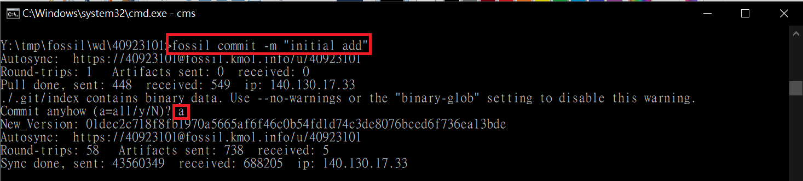

RoboDK <<
Previous Next >> 分組專題
Fossil
下載Fossil
fossil解壓縮到y槽

建立資料夾
mkdir fossil
cd fossil
打上 fossil clone https://40923101@fossil.kmol.info/u/40923101 40923101.fossil
打上密碼，問你要不要記住密碼 y
查看fossil資料夾裡面有沒有 40923101.fossil
再次建立資料夾
mkdir wd
cd wd
mkdir 40923101
cd 40923101
然後 fossil open ./../../40923101.fossil
查看40923101資料夾裡面有沒有 FOSSIL
cd .. 退回wd
git clone --recurse-submodules https://github.com/40923101/wcm2021.git
複製wcm2021裡的資料到40923101資料夾內
fossil add .
fossil commit -m "inital add"
問要下載全部嗎 a

完成後就可以查看倉儲 https://fossil.kmol.info/u/40923101/doc/trunk/index.html
RoboDK <<
Previous Next >> 分組專題